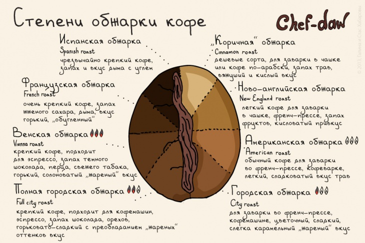
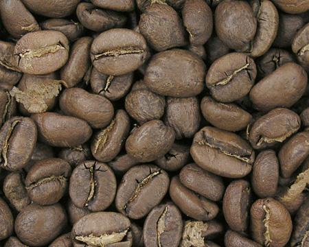
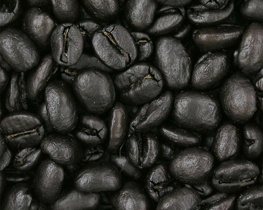

Степени обжарки
Создать единую шкалу степени обжарки зерен кофе - невозможно. Разные зерна, обжаренные одним способом, имеют разный вкус. Так же, как и одно и то же зерно, обжаренное разными способами. Да и вкусы у дегустаторов индивидуальны: "сильно" и "слабо" для каждого - свое. Принята классификация, что темные блестящие зерна - это французская, итальянская, кубинская и испанская обжарка, а матовые коричневые, янтарные или шоколадные оттенки зерна - слабая и средняя обжарка.
Слабообжаренный кофе
Слабообжаренный кофе - отличается явной кислинкой, прекрасно сочетается с молоком. Зерна светло-коричневого цвета, такая технология обжарки кофе подходит для мягкого сырья, позволяет в полной мере проявить тонкий аромат и многогранный вкус.
К слабой степени обжарки кофе относятся: коричная (скандинавская), новоанглийская, американская и городская.
Высшая степень обжарки кофе
Высшая степень обжаривания характерна для многих европейских стилей приготовления кофе. Зерна - темно-коричневые, почти черные, маслянистые. Вкус с явной горчинкой и приятным "паленым" привкусом, идеально сочетается со сливками, но популярен и в чистом виде, как черный послеобеденный кофе. К кофе высшей степени обжарки относится Испанская или Тёмная Французская обжарка.
Испанская или Тёмная Французская обжарка (VIII степень)
Внешний вид кофейного зерна – жирная глянцевая поверхность, практически черный цвет. Зерно становится очень ломким и хрупким.
Эспрессо из зерен испанской обжарки обладает островатым вкусом, он густой и крепкий.
Это одна из самых сложных степеней обжарки, подходящая далеко не всем сортам кофе, из-за того, что некоторые просто сгорают до золы.
Из-за специфического вкуса зерна испанской обжарки редко продаются в чистом виде, чаще они используются для создания купажей.
Нельзя сказать, какой способ обжарки кофе лучше. Это определяется только индивидуальными предпочтениями каждого конкретного человека.